Palm Parts
- I highly recommend you get these Aluminum 3D printed by PCBWay or other manufacturers for enhanced durability. ($1000)
- Due to the tolerance limitations of metal 3D printing, you may experience some backlash (10-15 degrees) in the forward MCP motion.
It's not a big deal but something to be aware of. - You may also need to file down slight burrs and irregularities in the manufacturing process. This is normal.
- This can be eliminated by having the CAD customized for CNC-machining at local shops for tighter tolerances. But this option falls outside our goal of maintaining easy-to-build instructions, and we only use 3D printed metal parts in our demos.
- Upload this STP file for the right hand, or this STP file for the left hand. They contain all of the metal parts you need for PCBWay.
-
Select these options as in the photo:
- Quantity 1
- Aluminum
- Tapping true and upload this tapping instructions sheet so they tap the holes.
- No Inserts
- Part Assembly
- Wall thickness taken: Yes
- Non-standard printed threads: No
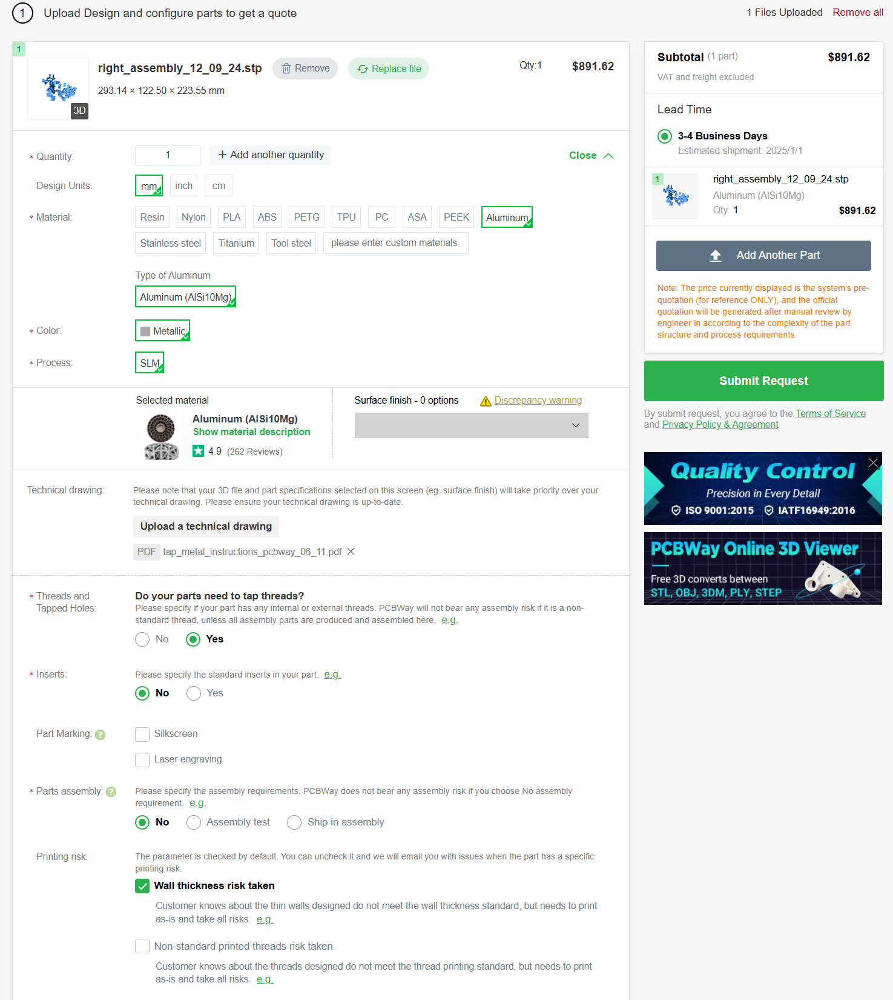
| Item | Preview | Download | Quantity |
|---|---|---|---|
| 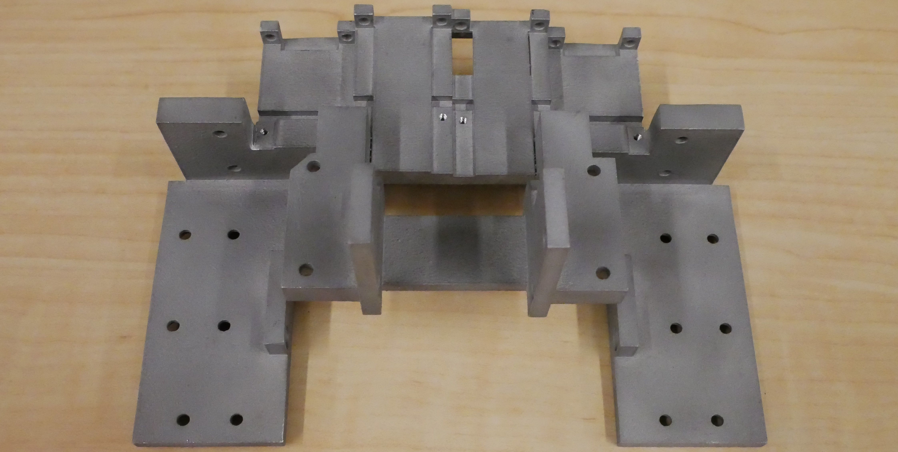 | 4 Fingers Lower Palm Metal STP
4 Fingers Lower Palm PLA STP |
1 | |
| 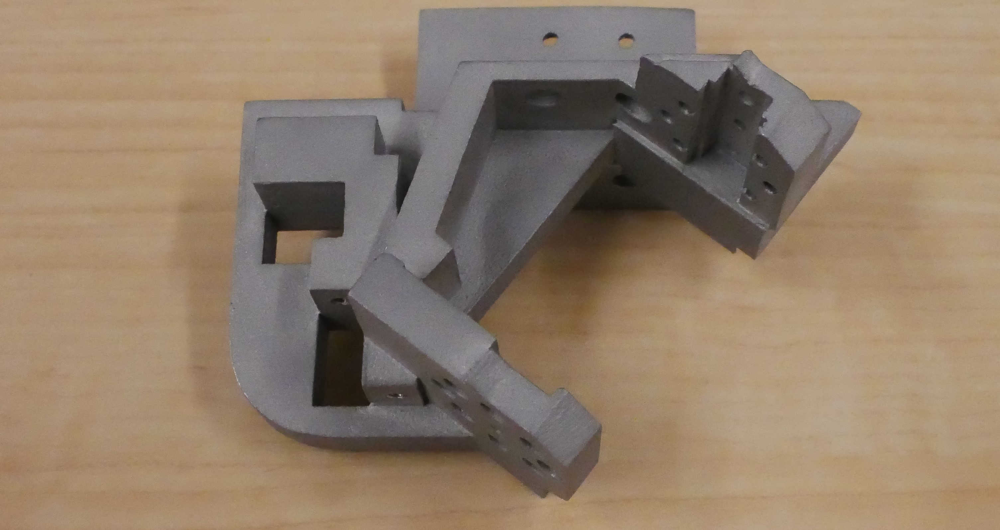 | No Fingers Lower Palm Metal STP
No Fingers Lower Palm PLA STP |
1 | |
| 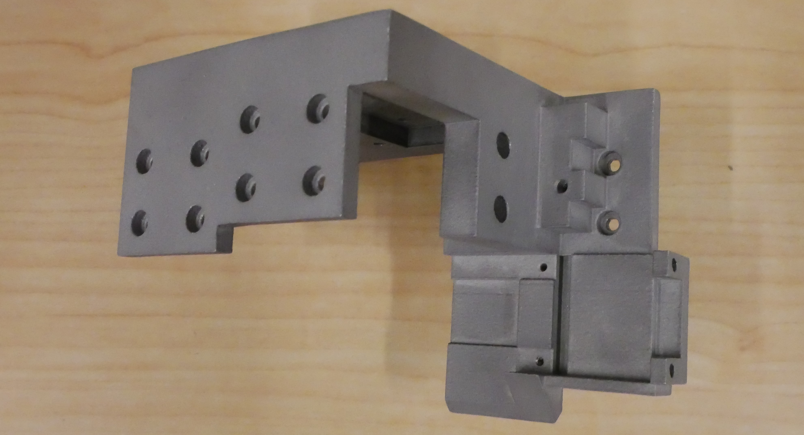 | Thumb Lower Palm Metal STP
Thumb Lower Palm PLA STP |
1 | |
| 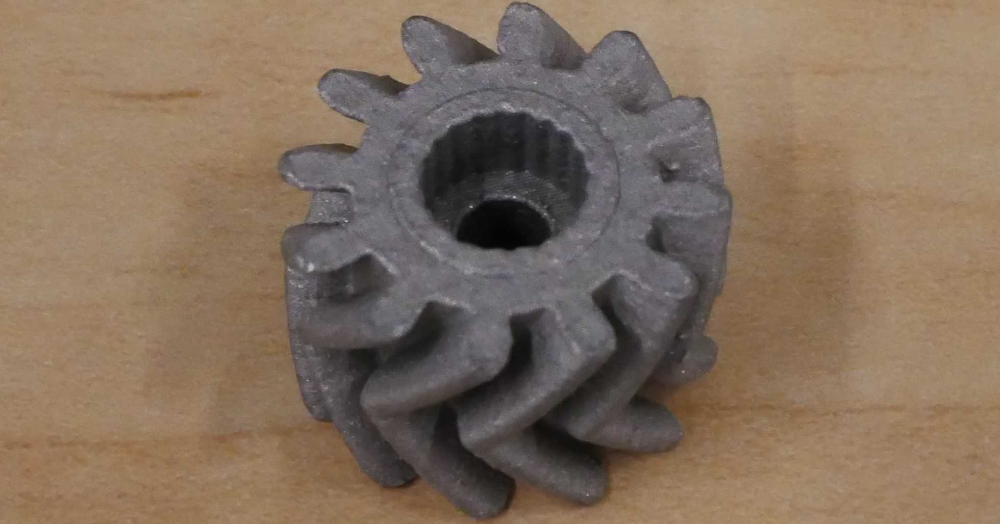 | Horn Gear Metal STP
Horn Gear PLA STP |
3 + 2 mirrored | |
| 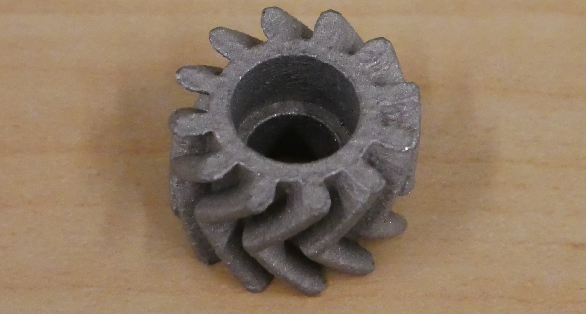 | Screw Gear Metal STP
Screw Gear PLA STP |
3 + 2 mirrored | |
| 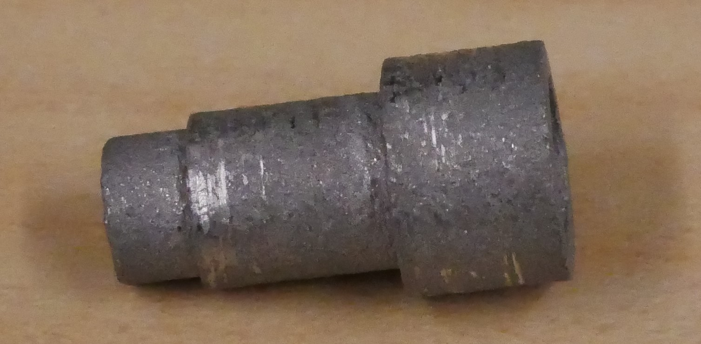 | Screw Bushing Metal STP
Screw Bushing PLA STP |
5 | |
| 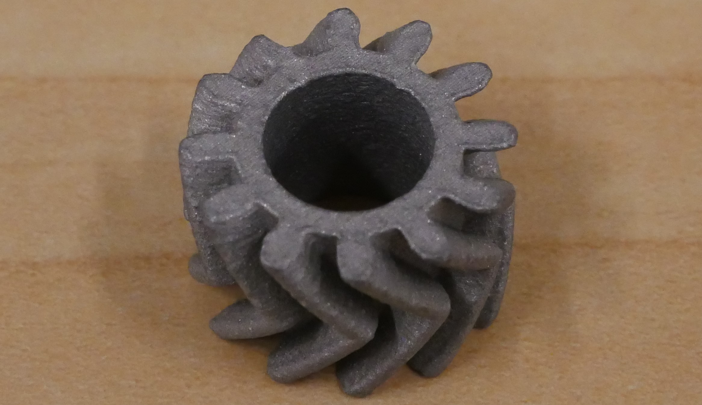 | Axle Gear Metal STP
Axle Gear PLA STP |
5 | |
| 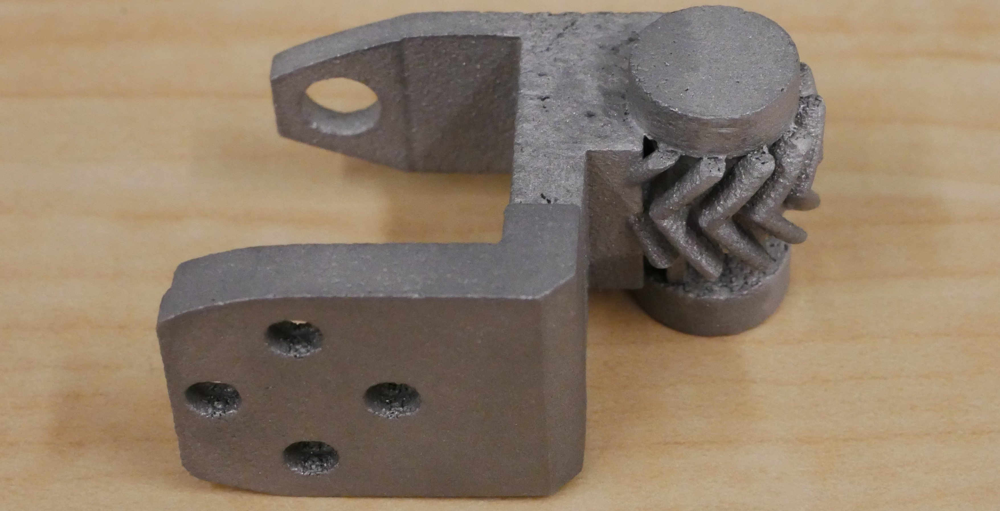 | MCP Forward Metal STP
MCP Forward PLA STP |
3 + 2 Mirrored | |
| 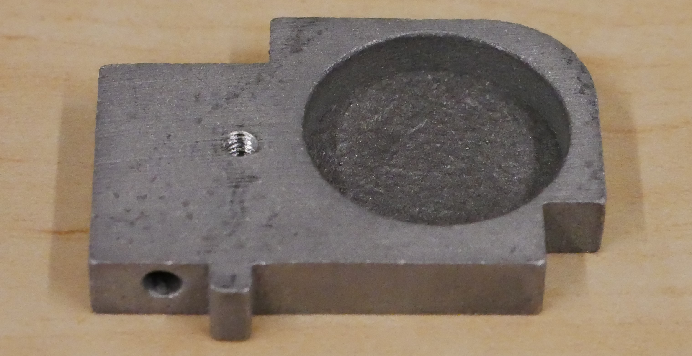 | MCP Holder Outer Metal STP
MCP Holder Outer PLA STP |
3 + 2 Mirrored | |
| 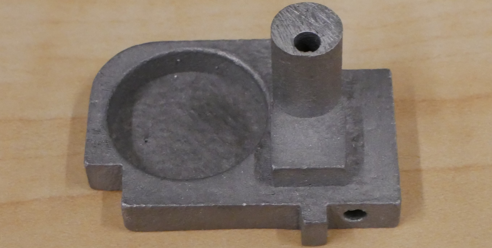 | MCP Holder Inner Metal STP
MCP Holder Inner PLA STP |
3 + 2 Mirrored |
Finger and Top Palm
Material and Nozzle Setup
- Replace the default 0.4mm MK8 nozzle on the right extruder with a 0.2mm MK8 nozzle. You can use a spare MK8 nozzle purchased from Amazon.
- Load TPU filament into the left 0.4mm non-hardened nozzle.
- Load PLA filament into the right 0.2mm non-hardened nozzle.
Note: The 0.2mm nozzle improves the smoothness of the tendon channel compared to the 0.4mm nozzle.
Preparing the TPU Nozzle
- If the TPU nozzle was previously used with PLA, clean it thoroughly:
- Use cleaning filament to flush out any residual material.
- If necessary, use a poking tool to remove blockages.
- If the nozzle is old, consider replacing it with a new MK8 nozzle for better filament flow.
Adjusting Flow Rate
If using a new TPU nozzle, adjust the flow rate:
- On the printer's touch screen, navigate to the adjustment tab and set the TPU nozzle's flow rate to 85%.
This adjustment compensates for the easier flow of a fresh nozzle, unlike an old nozzle which may slow down. The fingers should feel firm but not super difficult to curl.
If you do not have a Snapmaker J1s, feel free to message me. I can arrange to get you these parts!
Setting Up Cura
- Download and install Cura (verified with version 5.3).
- Add the Snapmaker J1S plugin and ensure the nozzle sizes are configured correctly.
- Open the provided
.3MFfiles and select "Open as Project" instead of "Open as Model". - The print settings and model will load automatically.
- Click Slice, then export the file to the printer via USB drive, or WiFi connection.
Loading Soft Filament
- Open the extruder gear by pulling the tab on the top of the extruder facing you.
- Carefully feed the filament through the extruder.
Dealing with Clogs
- If you encounter constant clogging errors, replace the nozzle on the print head.
- You do not need to replace the entire nozzle module (including the fan). Instead, use any MK8-compatible brass nozzle for the tip, as with standard 3D printers.
Stringy Prints
- If your prints appear excessively stringy, this is normal and part of the settings designed to prevent clogs.
- After the print is complete, use a small cutter to remove the support material and any stringy TPU.
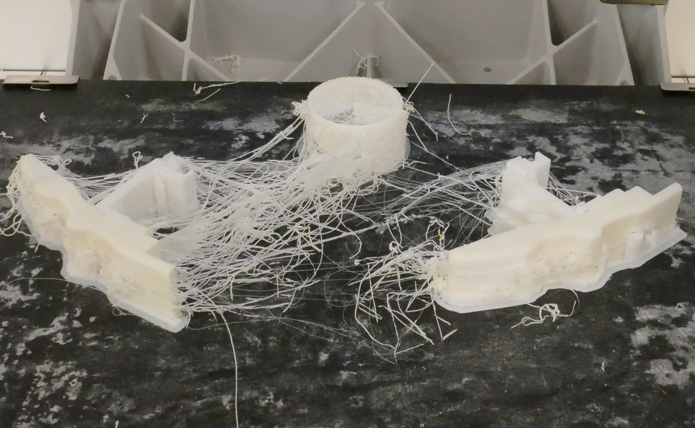
Preparing the STP Model in Fusion360
- I recommend you use Fusion360 as it lets you upload STPs into Cura using the 3MF format.
- Upload the STP file to Fusion360.
- Use the Combine Tool to merge adjacent TPU and PLA bodies in the fingers:
- For TPU bodies:
- Select one TPU body as the target body.
- Select the other two TPU bodies as tool bodies.
- For PLA bodies:
- Repeat the same process for adjacent PLA bodies in the base or the fingertip.
- For TPU bodies:
- Set the operation to Join and ensure that:
- You do not select "New Component."
- You do not enable "Keep Tools."
Prepare Cura
- Disable "Drop to Build Plate Automatically" in Cura:
- Go to Preferences -> Configure Cura -> General.
- Uncheck Automatically Drop Models to the Build Plate.
- Open the
.3MFfile in Cura from an old model like from my website. We will use the slicer settings from here. - Delete the bodies inside the project. We will replace them with your STP in the next step.
Exporting the Model from Fusion360 to Cura
- In Fusion360, go to Make -> 3D Printer -> Generic.
- Click Export.
- A new Cura window will open with the previous project settings applied to the new model.
- Group the resulting model and move it onto the build plate.
- Ungroup the Model and assign each body to TPU or PLA as appropriate.
- Click Slice to verify the setup worked successfully.
Other Notes:
I recommend using sculpting tools to CAD the soft and hard material together.To create the URDF I used onshape-to-robot.
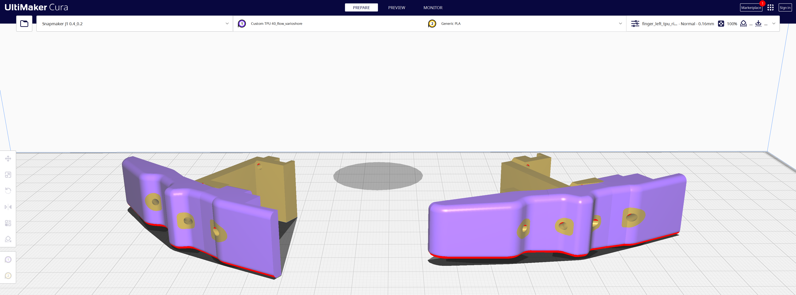
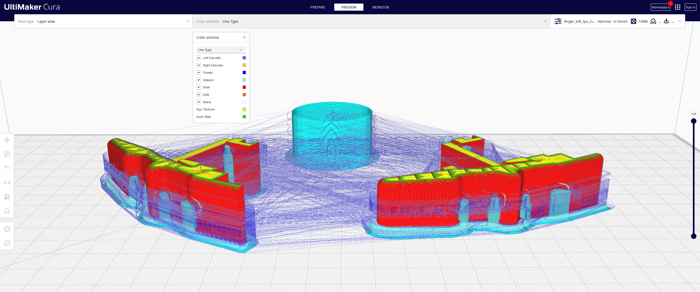
Settings Overview
- All fingers share the same print settings.
- Palm pieces have similar settings to the fingers but we:
- Enable Generate Interlocking Structure so the TPU and PLA parts stick together better
- Use TPU for support instead of PLA so it can peel away easily.
- Adjust Flow Rate for Material Durability
- The STP includes an additional body with a protruding cylinder on the side. In Cura, you can select this body and adjust the flow rate for the overlapping section of the palm. If you prefer not to use this feature, you can remove this body.
Adjusting Flow Rate
The flow rate directly affects the density of the foaming material, as demonstrated in this video. Follow these guidelines:
- Always print with 100% infill.
- Modulate the flow rate to control the material's density and stiffness.
- Use a higher flow rate for the outer skin of the fingers and palm compared to the inner parts.
Support and Adhesion
- Enable Support Touching Build Plate to prevent support structures from entering the tendon channel.
- Ensure proper adhesion so the fingers stick consistently to the build plate.
- Use PLA for support material to prevent it from sticking to the TPU of the fingers.
Temperature and Retraction Settings
Printer temperature and retraction settings are optimized to ensure consistent material flow and foaming. The messy retraction and TON of stringiness is normal and prevents clogging.
The Recreus Filaflex Foamy is the softest material that Snapmaker can print that foams. The Colorfabb Varioshore TPU does not have as good restitution properties after the finger joint is flexed.
For PLA, Polymaker Polylite PLA Pro was the best material I could find. You can also try using Polymaker Tough PC filament at 300°C, but my experience is that it doesn't print as consistently even if it does make the tendon channel slightly stronger.
Note that the Bambu AMS cannot switch between TPU and PLA automatically.
The Prusa XL is a new option, but it is more expensive ($3500) and by default, PrusaSlicer does not have separate flow rate settings for infill and outer walls.
| Item | Preview | Download | Quantity |
|---|---|---|---|
 |
4 Fingers Upper Palm STP
4 Fingers Upper Palm 3MF |
1 | |
| 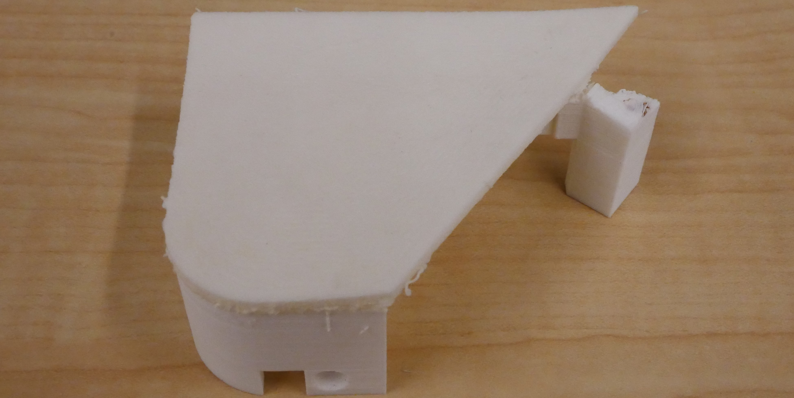 | No Fingers Upper Palm STP
No Fingers Upper Palm 3MF |
1 | |
| 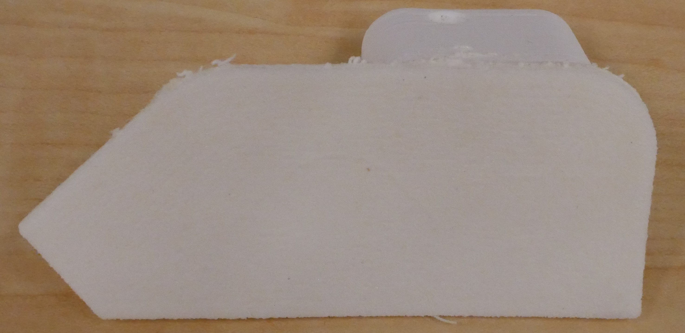 | Thumb Upper Palm STP
Thumb Upper Palm 3MF |
1 | |
| 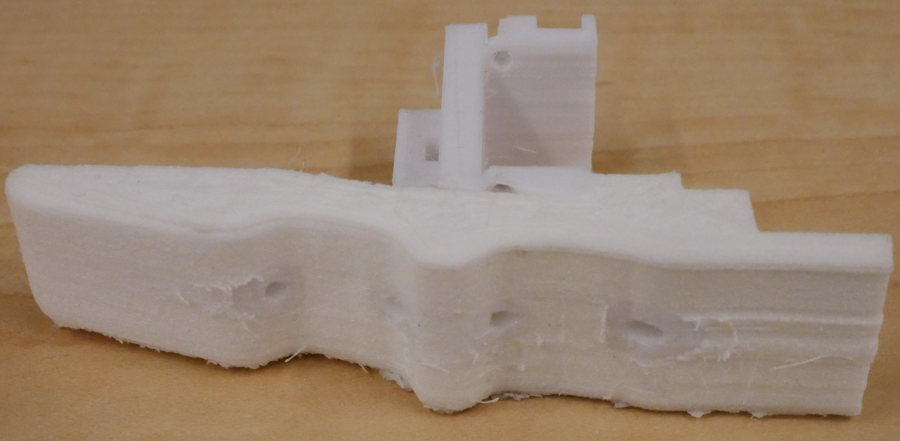 | Finger STP
Finger 3MF |
4 | |
| 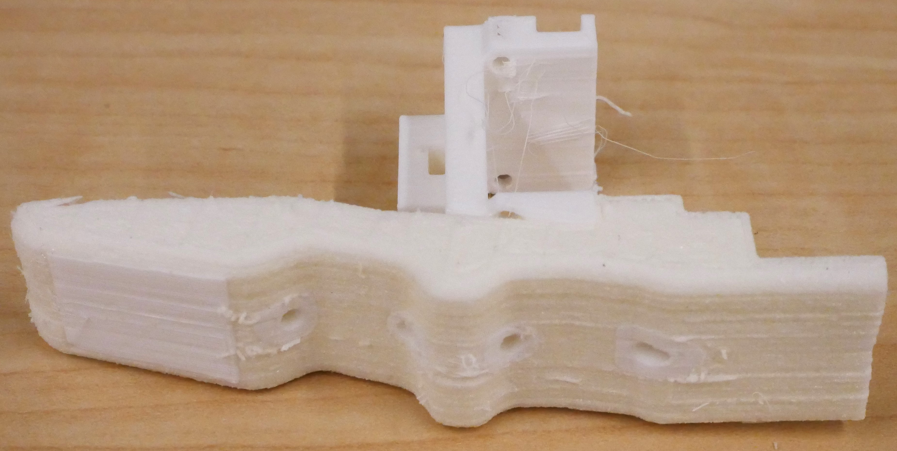 | Finger Touch STP
Finger Touch 3MF The hard PLA surface provides an ideal surface for glueing the touch sensor. |
4 (Choose this or the regular finger) |
|
| 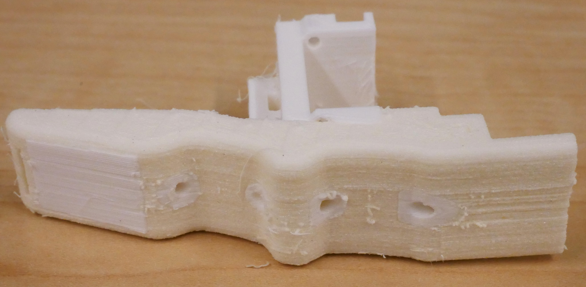 | Finger Touch With Cable Slot STP
Finger Touch With Cable Slot 3MF The slot allows for touch sensor cable to pass through. |
4 (Choose this or the regular finger) |
|
| 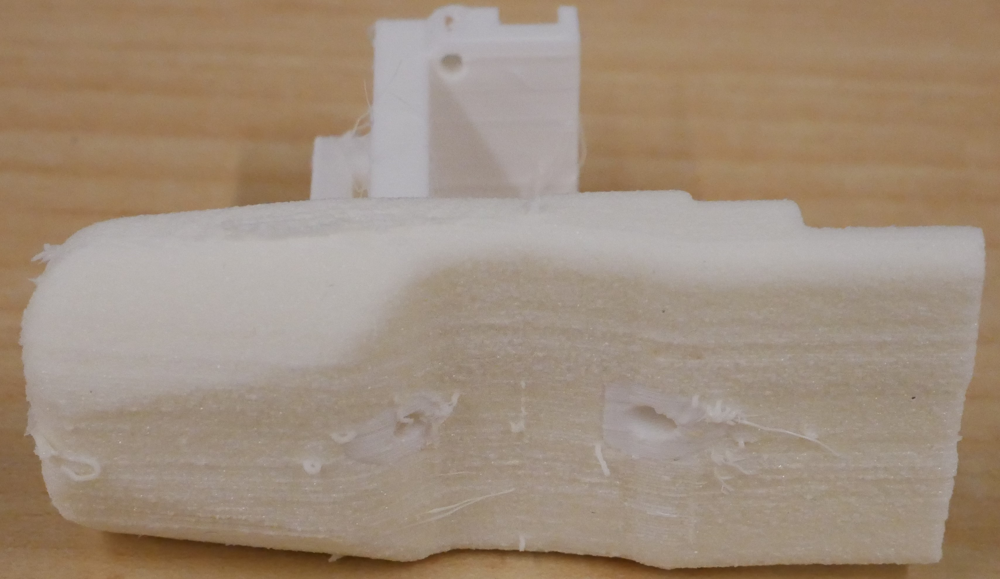 | Thumb STP
Thumb 3MF |
1 | |
| 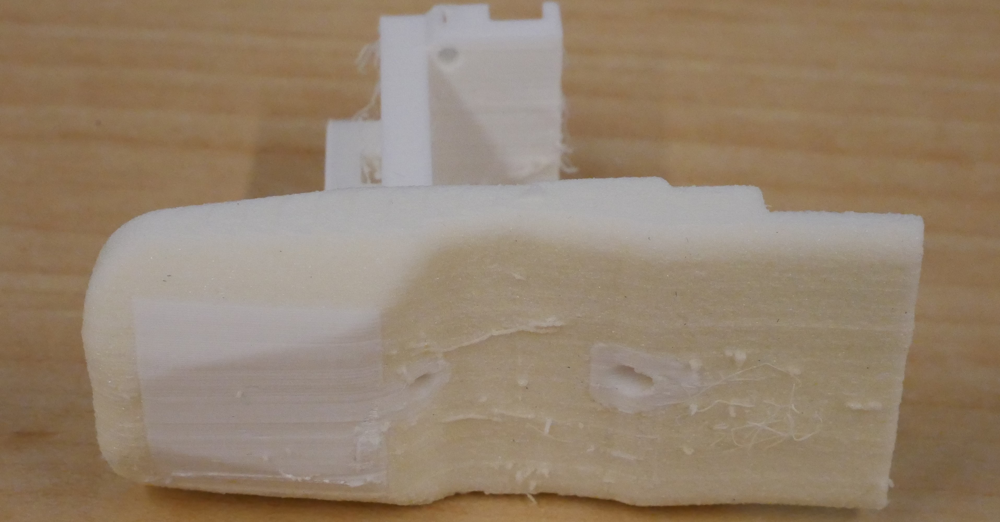 | Thumb Touch STP
Thumb Touch 3MF The hard PLA surface provides an ideal surface for glueing the touch sensor. |
1 (Choose this or the regular thumb) |
|
| 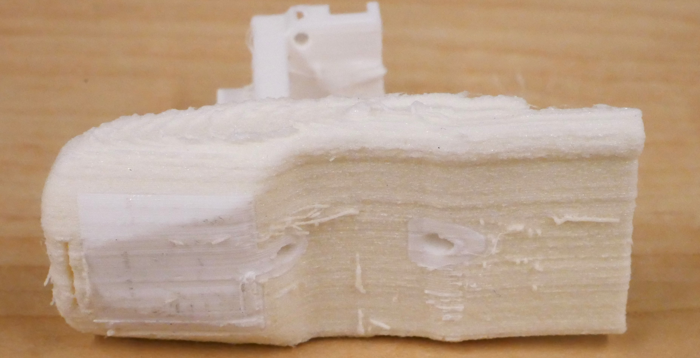 | Thumb Touch With Cable Slot STP
Thumb Touch With Cable Slot 3MF The slot allows for touch sensor cable to pass through. |
1 (Choose this or the regular thumb) |
|
| 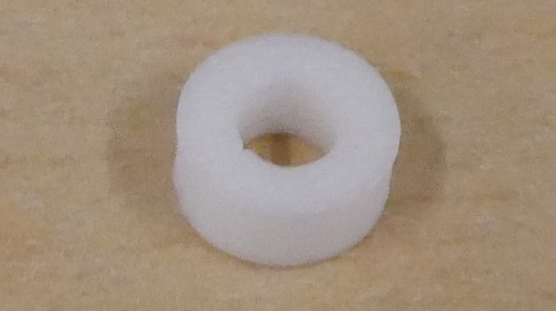 | MCP Spacer STP
MCP Spacer 3MF (Use the same 0.2mm PLA nozzle as for the fingers.) |
1 |
PLA Parts
Print these PLA parts using any standard printer. I used the Snapmaker J1S with two 0.4mm steel-hardened nozzles (which are less prone to clogging), with the left nozzle filled with Black Polymaker Pro PLA and the right nozzle loaded with dissolvable PVA support.
| Item | Preview | Download | Quantity |
|---|---|---|---|
| 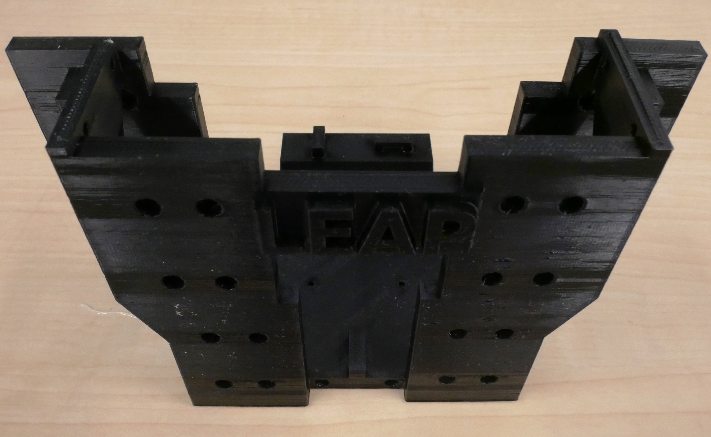 | 4 Fingers Bottom Right STP 4 Fingers Bottom Left STP (Print 40% Infill) |
1 | |
| 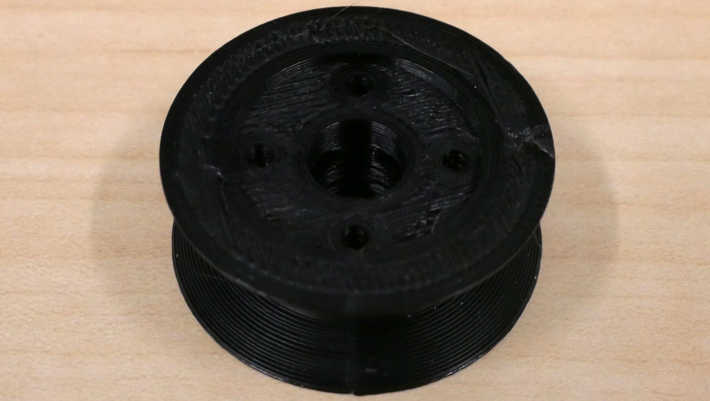 | Pulley STP (Print 100% Infill) |
5 | |
| 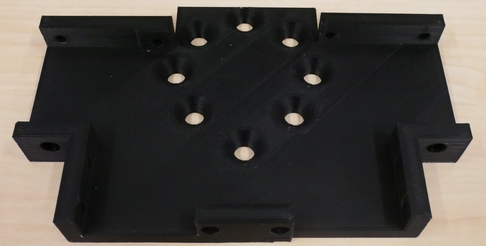 | 4 Fingers Mount STP (xArm/Franka/UR5) (Print 60% Infill) |
1 | |
| 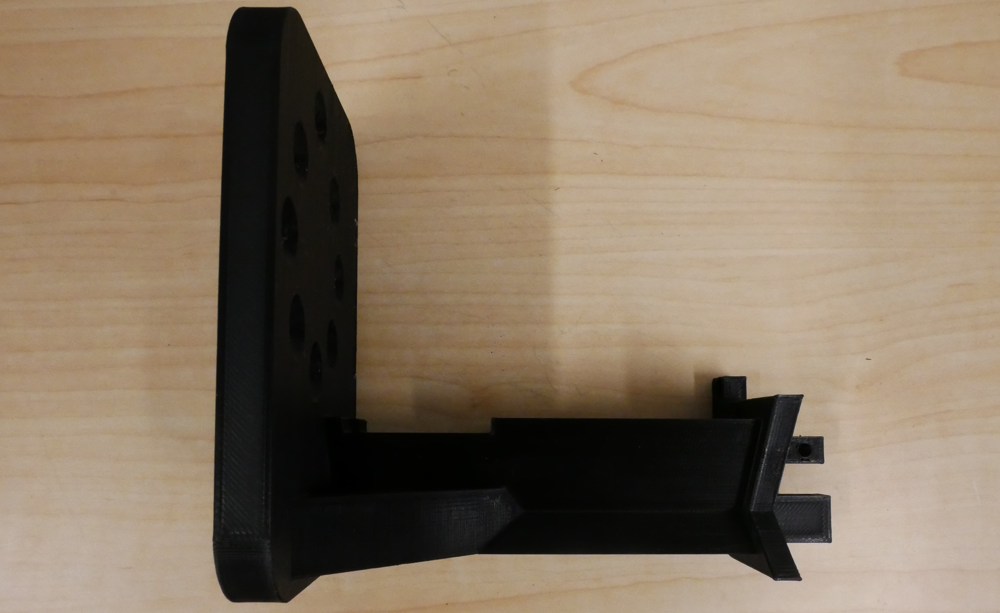 | No Fingers Mount STP (xArm/Franka/UR5) While anatomically correct, I do not recommend it due to the strain on the palm motor and the weaker mounting. (Print 80% Infill) |
1 (Alternate to 4 Finger Mount) |
|
| 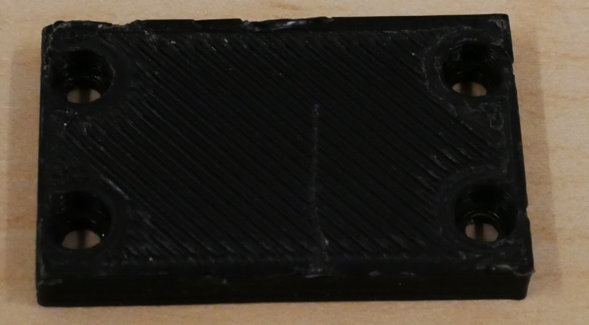 | U2D2 Holder STP (Print 60% Infill) |
1 |
By downloading these files, you agree to our CC BY-NC-SA Attribution-NonCommercial-ShareAlike license which allows you to use and build upon our work non-commercially.
The design for LEAP Hand is provided as-is and without warranty.